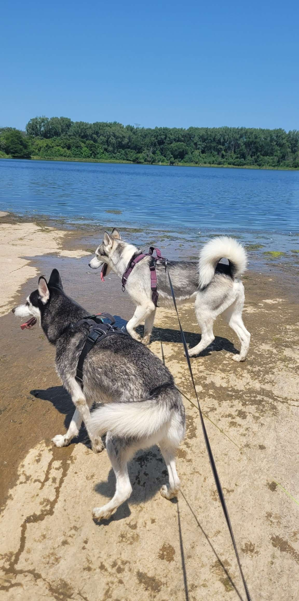
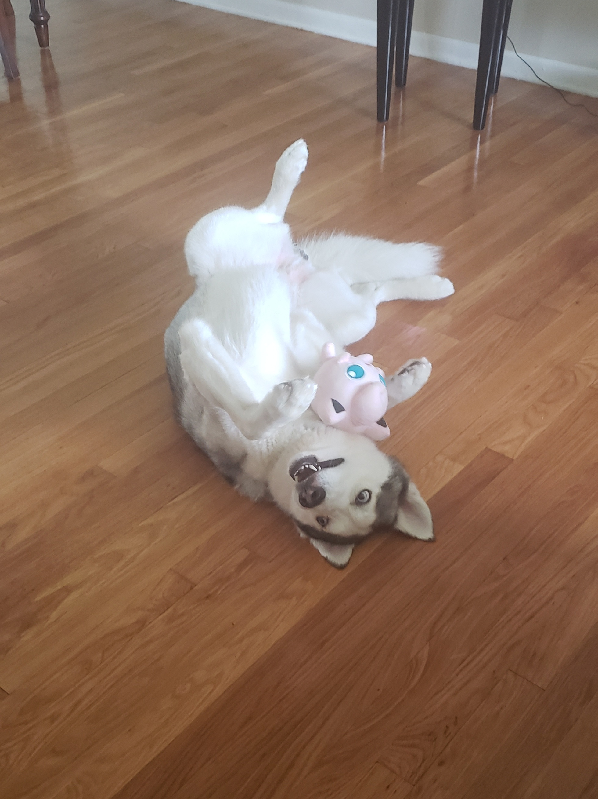
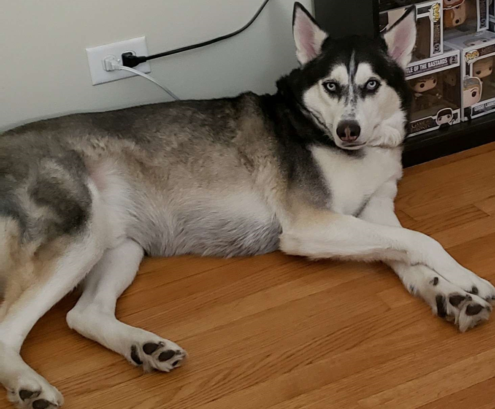

My name is Leza and I currently reside in Chicago with my two huskies, Ace and Bellamy. As much as I love Chicago, I'll be moving to Florida
soon to live with my fiance. I love to play video games, read, strength train, and travel. Behind my extroverted shell, I am at heart an
absolute homebody. I'm at my happiest curled up on the couch with a great book, some anime playing in the background, or on discord chatting with friends while we game.
My favorite foods include Indian, sushi, and pizza. I am very spiritual and love learning about different people, cultures, history, and metaphysical philosophies.
Life is beautiful so let's be kind and radiate positivity!
My Dogs



These are my dogs, Ace and Bellamy.
Why Software Engineering?
Ever since I was a young girl, I could remember watching my brother play video games and feeling
so intrigued and sucked into the storylines, graphics, and art of it all. And as soon as I was allowed to, I picked them up myself
and never looked back. As time went on, I dove into online gaming and that's what led me to fall in love with an MMORPG called Final Fantasy XI at the age of 13.
I went on adventures, met great people, and most of all.. it opened up a new genre of games I never knew existed before.
Years went by, countless games played, and yet nothing ever came close to my love for the game that got me hooked. So a few years ago,
I learned that there are private server versions of that game which allowed players to enjoy it at an era they knew and loved. I decided to give it a try and even
volunteered my time to be a part of the staff running it. During that time, I got to look at the code as a GM (Game Master) trying to resolve player tickets.
The more I looked at the code and started to understand the resolutions to the issues at hand, the more excited I got to learn even more. I started teaching
myself using online resources available to me such as codeacademy, codefinity, and even spoke to a few developers I befriended to help me debug issues I'd run
into as a GM. It's been a blast on my own and now I am excited to take a more structured process in my learning journey with Coding Temple!